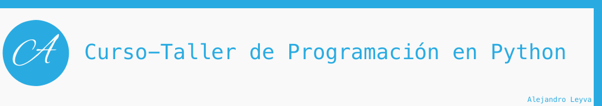
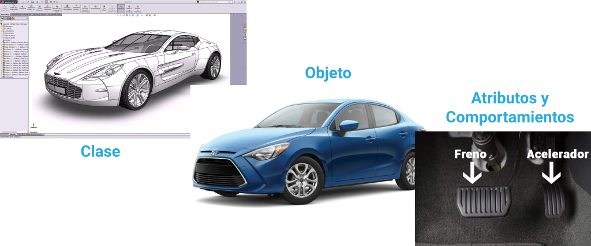
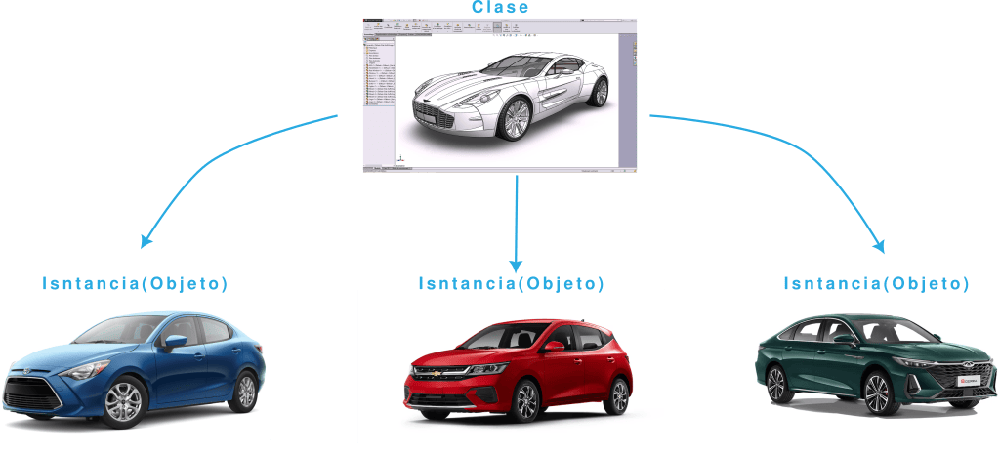
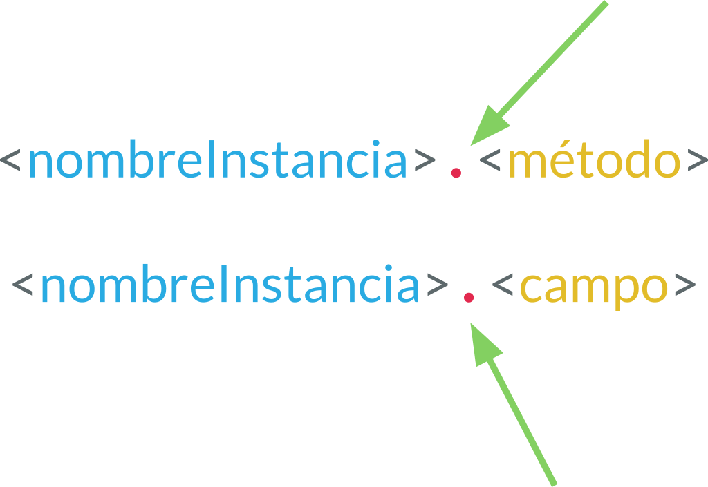

15. Programación Orientada a Objetos
Introducción a la Programación Orientada a Objetos
La programación orienta a objetos es un paradigma de programación, lo cual esta enfocado en la abstracción del mundo real a código de programación; es decir, es una representación de las cosas del mundo en un archivo con código, el cual tiene los atributos y comportamientos.
Los programas se construyen a partir de definiciones de objetos y definiciones de funciones; la mayoría de los cómputos se hacen con base en objetos. Cada definición de objetos corresponde a algún concepto o cosa del mundo real, y las funciones que operan sobre esos objetos corresponden a las maneras en que los conceptos o cosas reales interactúan
Clase
Clase se le denomina a un archivo que tiene la definición de nuestro objeto o clase.
La clase es donde se declaran los atributos y métodos.

Atributos y Comportamientos
Las clases contienen sus atributos y sus métodos (no siempre es necesario que los tenga).
¿Qué es un atributo?
Es un campo o propiedad que se declara en la clase; es decir, que tiene el objeto, por ejemplo, cantidadPuertas = 4, indicamos el numero de puertas de nuestra clase Carro.
¿Qué es un método?
- Es un comportamiento (acción) que realiza un objeto (cosa).
- Una secuencia de pasos ordenados.s
- Es un bloque o secuencia de código que se repite continuamente.
- Hace una sola tarea, y lo hace muy bien.
- Su nombre se define con un verbo (acción).
- Funciones de un objeto.
- Modifica estados.
Los métodos son como las funciones, pero con dos diferencias:
- Los métodos se definen adentro de una definición de clase, a fin de marcar explícitamente la relación entre la clase y éstos.
- La sintaxis para llamar o invocar un método es distinta que para las funciones.
Instancia
Una instancia es la creación o invocación de un objeto; es decir, después de crear la clase podemos crear una instancia (objeto) para después, ser usado. Es como en el ejemplo del auto, primer fue diseñado y después, fue construido en una fabrica para ser usado.

self
Al momento de crear una clase se debe ocupar la palabra reservada self, la cual indica o hace referencia a la propia clase; indica que el método o campo de la propia clase. Siempre se debe usar dentro de una clase, fuera de ella no funciona.
POO
Creando una clase
Creando una clase vacía. Se usa una palabra reservada class el nombre de la clase (usando la convención CamelCase) y termina con dos puntos; colocamos pass con su respectiva indentation, para que la clase quede vacía sin declaración de métodos y campos.
class MyCar:
pass
Agregando campos a la clase
La declaración de campos globales, es lo mismo que estuviéramos declarando variables convencionales, sin embargo, estas solo pertenecen a la clase.
class MyCar:
color = "Blue"
on = False
Agregando métodos a la clase
Se declara con la palabra reservada def, al igual que cualquier funcional, pero dentro de una clase los métodos deben recibir como primer argumento siempre la palabra self, esto indica que pertenece a la clase.
class Car:
color = "Blue"
on = False
def sayName(self):
print("A car")
Creando una instancia (objeto)
Para crear una instancia se debe escribir el mismo nombre de la clase y agregar paréntesis (muy similar a llamar una función)
Para acceder a los campos y métodos de una clase se hace con la notación de punto; <instancia>.<campo> o <instancia>.<método>()
class Car:
color = "Blue"
on = False
def sayName(self):
print("A car")
car = Car() # se crea la instancia
print(car.color) # se invoca un campo de la instancia
print(car.on) # se invoca un campo de la instancia
car.sayName() # se invoca un método de la instancia
Blue
False
A car
Utilizando los campos dentro de la clase
Si queremos utilizar los campos o métodos de la propia clase, dentro de un método, se debe llamar, colocando primero la palabra <self>.<campo> o <self>.<método>()

class Car:
color = "Blue"
on = False
def sayName(self):
print("A car")
def description(self):
message = f"A car with a color: {self.color} and is turn on: {self.on}"
return message
def message(self):
print("+" * 10)
print(self.description())
print("+" * 10)
car = Car()
print(car.color)
print(car.on)
car.sayName()
print(car.description())
car.message()
Blue
False
A car
A car with a color: Blue and is turn on: False
++++++++++
A car with a color: Blue and is turn on: False
++++++++++
Ejemplos
Crear una clase, con las siguientes indicaciones, después crear una instancia, llamar sus campos y métodos
Ejemplo 1
- Clase: Auto
- Atributos:
- noPuertas: int
- kilometraje: float
- Comportamientos:
- acelerar(): void
- arrancar(): void
Ejercicios
Crear una clase, con las siguientes indicaciones, después crear una instancia, llamar sus campos y métodos
Ejercicio 1
- Clase: Persona
- Atributos:
- nombre: String
- edad: int
- Métodos:
- saludar(): void
- decir_edad(): void
Ejercicio 2
- Clase: Perro
- Atributos:
- nombre : String
- raza : String
- Métodos:
- ladrar(): void
- correr(int velocidad): void
- jugar(): String : (pelota, hueso, chancla)
Encapsulamiento
Niveles de acceso
los niveles de acceso no son tan estrictos como en otros lenguajes orientados a objetos como Java o C#. Python implementa un sistema basado en convenciones y no en restricciones estrictas.
Los niveles de acceso son:
- public
- protected
- private
Público (public)
Los atributos y métodos públicos son accesibles desde cualquier parte del código. por defecto, todo es público.
class Persona:
nombre = "Juan"
def saludar(self):
print(f"Hola, me llamo {self.nombre}")
persona = Persona()
print(persona.nombre) # Acceso directo
persona.saludar() # Acceso directo
Protegido (_) (protected)
Los atributos y métodos protegidos se indican con un guion bajo al principio del nombre (_nombre). Esto es solo una convención, y se espera que los desarrolladores no accedan a ellos directamente fuera de la clase o de sus subclases. Sin embargo, técnicamente siguen siendo accesibles.
class Persona:
_nombre = "Mario" # Protegido
def _saludar(self): # Método protegido
print(f"Hola, soy {self._nombre} (protegido)")
persona = Persona()
print(persona._nombre) # Accesible, aunque no recomendado
persona._saludar() # Accesible, aunque no recomendado
Privado (__doble_guion_bajo)
Los atributos y métodos privados se indican con dos guiones bajos al principio del nombre (__nombre).
class Persona:
__nombre = "Juan" # Privado
def __saludar(self): # Método privado
print(f"Hola, soy {self.__nombre} (privado)")
def mostrar_nombre(self): # Método público para acceder a __nombre
print(self.__nombre)
persona = Persona()
persona.mostrar_nombre() # Acceso indirecto
print(persona.__nombre) # Error: AttributeError
persona.__saludar() # Error: AttributeError
- Convención vs Restricción: En Python,
_y__son más sobre cómo comunicar la intención de acceso que sobre evitarlo estrictamente. - Usa
__para datos que realmente necesitan ser privados y protegidos contra modificaciones accidentales. - Usa
_para señalar que un atributo o método es solo para uso interno.
Constructor
Un constructor es un método especial en una clase que se llama automáticamente cuando se crea una nueva instancia de esa clase. En Python, el constructor se define mediante el método especial __init__.
El Constructor en Python
Un constructor es un método especial en una clase que se llama automáticamente cuando se crea una nueva instancia de esa clase. En Python, el constructor se define mediante el método especial init.
Características del Constructor
- Inicialización Automática: Se ejecuta al crear una instancia de la clase.
- Propósito principal: Inicializar atributos de la instancia con valores específicos o predeterminados.
class Clase:
def __init__(self, parametros):
# Inicialización de atributos
- Es un método mágico (o dunder, por "double underscore").
- Se utiliza para inicializar atributos de la clase.
- Es opcional. Si no defines un constructor, Python utiliza un constructor por defecto que no realiza ninguna acción específica.
- Parámetro
self:- Representa la instancia actual de la clase.
- Es obligatorio en los métodos de instancia, incluyendo
__init__. - Permite acceder y modificar los atributos de la instancia.
class Persona:
def __init__(self, nombre, edad):
self.nombre = nombre # Atributo de instancia
self.edad = edad # Atributo de instancia
def mostrar_informacion(self):
print(f"Nombre: {self.nombre}, Edad: {self.edad}")
# Crear una instancia
persona = Persona("Juan", 30)
persona.mostrar_informacion() # Salida: Nombre: Juan, Edad: 30
Tipos de Constructores
Constructor por Defecto: No acepta parámetros más allá de self.
class Persona:
def __init__(self):
self.nombre = "Desconocido"
self.edad = 0
persona = Persona()
print(persona.nombre) # Desconocido
Constructor con Parámetros: Acepta parámetros para inicializar atributos.
class Persona:
def __init__(self, nombre, edad):
self.nombre = nombre
self.edad = edad
persona = Persona("María", 25)
print(persona.nombre) # María
Constructor con valores predeterminados:
class Persona:
def __init__(self, nombre="Anónimo", edad=18):
self.nombre = nombre
self.edad = edad
persona1 = Persona()
persona2 = Persona("Luis", 40)
print(persona1.nombre) # Anónimo
print(persona2.nombre) # Luis
Sobrecarga de Constructores: Python no soporta sobrecarga de constructores directamente. Puedes simularla utilizando valores predeterminados o lógica dentro del constructor.
class Persona:
def __init__(self, nombre=None, edad=None):
if nombre is None and (edad is None or edad == 0):
self.nombre = "Desconocido"
self.edad = 0
elif edad is None:
self.nombre = nombre
self.edad = 0
elif nombre is None:
self.nombre = "Desconocido"
self.edad = edad
else:
self.nombre = nombre
self.edad = edad
persona1 = Persona()
persona2 = Persona("Luis")
persona3 = Persona("Ana", 30)
persona4 = Persona(edad=30)
print(persona1.nombre, persona1.edad) # Desconocido 0
print(persona2.nombre, persona2.edad) # Luis 0
print(persona3.nombre, persona3.edad) # Ana 30
print(persona4.nombre, persona4.edad) # Desconocido 30
Buenas Prácticas
- Define los atributos claramente dentro del constructor.
- Valida los parámetros para evitar inconsistencias en los objetos.
- Utiliza
__init__únicamente para inicializar atributos. Evita realizar lógica compleja. - Documenta el constructor con docstrings para explicar los parámetros.
Ejemplo 2
- Un constructor que inicializa los atributos
nombreyedadde una clase.
class Persona:
def __init__(self, nombre, edad):
self.nombre = nombre
self.edad = edad
def mostrar_informacion(self):
print(f"Nombre: {self.nombre}, Edad: {self.edad}")
persona = Persona("Carlos", 25)
persona.mostrar_informacion()
Ejemplo 3
-
El constructor asigna valores predeterminados si no se pasan argumentos.
-
Clase: Auto
- Constructor: tipo: str, marca: str
- Atributos:
- tipo: -str
- marca: -str
- Comportamientos:
- mostrar_informacion(): void
class Auto:
def __init__(self, tipo="Coche", marca="Genérica"):
self.tipo = tipo
self.marca = marca
def mostrar_informacion(self):
print(f"Tipo: {self.tipo}, Marca: {self.marca}")
auto1 = Auto()
auto2 = Auto("Moto", "Yamaha")
auto1.mostrar_informacion()
auto2.mostrar_informacion()
Ejercicio 3
- Clase: Libro
- Constructor: titulo, auto, publicacion
- Atributos: Título : -str Autor : -str Año de publicación: -str
- Comportamientos:
- mostrar_informacion():+ void
Ejercicio 4
- Clase: Circulo
- Constructor: radio
- Atributos: radio : -float
- Comportamientos:
- get_area(): + float
- get_perimetro(): + float
- mostrar_datos(): + void
Métodos Estáticos
En Python, un método estático es un método que pertenece a una clase pero no está ligado a una instancia específica de esa clase. No puede acceder ni modificar el estado de la instancia (atributos de la instancia) ni el de la clase (atributos de la clase).
Para definir un método estático, se utiliza el decorador @staticmethod.
Características principales de un método estático
- No recibe
selfniclscomo primer parámetro: - Esto lo diferencia de los métodos de instancia (que reciben self) y los métodos de clase (que reciben cls).
- Se comporta como una función ordinaria dentro de una clase
- Aunque esté definido dentro de la clase, no puede acceder a atributos o métodos de instancia o clase.
- Útil para funcionalidad independiente
- Se utiliza para definir funciones que no dependen de la clase ni de sus instancias pero tienen sentido en el contexto de la clase.
Como implementarlo e invocarlo
class Example:
@staticmethod
def static_method(arg1, arg2):
return f"Static method called with {arg1} and {arg2}"
##################################################
example = Example()
# Invocación desde la clase
print(Example.static_method(10, 20))
# Invocación desde la instancia
print(example.static_method(30, 40))
¿Cuándo usar métodos estáticos?
- Cuando necesitas una función que esté relacionada con una clase de forma lógica pero no necesite acceder a atributos o métodos de la clase o de sus instancias.
- Ejemplo
- Validaciones
- Utilidades matemáticas
- Operaciones de transformación de datos
class MathUtils:
@staticmethod
def add(a, b):
return a + b
@staticmethod
def multiply(a, b):
return a * b
# Uso
print(MathUtils.add(3, 5)) # 8
print(MathUtils.multiply(3, 5)) # 15
Mini proyecto POO básico
Haremos un simple gestor para un almacén de componentes electrónicos, aplicando las bases de POO.
- clase
Component: sera el objeto del componente electrónico - clase
Inventory: sera el que maneje el archivo como base de datos y el CRUD
import csv
import os
import uuid
class Component:
"""
Represents an electronic component in the store.
Attributes:
component_id (str): Unique ID of the component.
name (str): Name of the component.
quantity (int): Quantity of the component in stock.
price (float): Price of the component.
"""
def __init__(
self, name: str, description: str = "", quantity: int = 0, id: str | None = None
):
self.id = str(uuid.uuid4())[:6] if not id else id
self.name = name
self.description = description
self.quantity = quantity
@staticmethod
def get_columns():
return [
"ID",
"Name",
"Description",
"Quantity",
]
def __str__(self):
return f"id: {self.id}, name: {self.name}, description {self.description}, quantity: {self.quantity}"
class Inventory:
"""
Manages the inventory of electronic components.
Attributes:
file_name (str): Name of the CSV file used to store component data.
Methods:
add_component(): Adds a new component to the inventory.
update_component(): Updates the details of an existing component.
delete_component(): Deletes a component from the inventory.
view_inventory(): Displays all components in the inventory.
save_to_csv(): Saves the inventory to a CSV file.
load_from_csv(): Loads inventory data from a CSV file.
"""
def __init__(self, file_name: str = "inventory.csv"):
self.components = []
self.file_name = file_name
if not self._exist_csv():
self._create_csv(self.file_name)
else:
self._load_data()
def _exist_csv(self):
return os.path.exists(self.file_name)
def _create_csv(self, path_file):
with open(path_file, mode="w", newline="") as file:
writer = csv.writer(file)
writer.writerow(Component.get_columns())
def add_component(self, new_component: Component):
"""
Adds a new component to the inventory.
Args:
component_id (str): The ID of the component.
name (str): The name of the component.
quantity (int): The quantity of the component.
unit_price (float): The unit price of the component.
"""
self.components.append(self._add(component=new_component))
self._save_data()
print("Component added successfully.")
def _add(self, component: Component):
return {"id": component.id, "component": component}
def _save_data(self):
"""
Saves the current inventory data to the CSV file.
"""
with open(self.file_name, mode="w+", newline="") as file:
fields = Component.get_columns()
writer = csv.DictWriter(file, fieldnames=fields)
writer.writeheader()
for component in self.components:
component = component["component"]
writer.writerow(
{
Component.get_columns()[0]: component.id,
Component.get_columns()[1]: component.name,
Component.get_columns()[2]: component.description,
Component.get_columns()[3]: component.quantity,
}
)
def update_component(self, id: str, component_to_update: Component):
"""Updates the details of an existing component."""
old_components = self.components
self.components = []
change = False
for component in old_components:
if component["id"] == id:
old_component = component["component"]
print(f"new update {component_to_update}")
print(f"old component {old_component}")
old_component.name = (
component_to_update.name
if component_to_update.name
else old_component.name
)
old_component.description = (
component_to_update.description
if component_to_update.description
else old_component.description
)
old_component.quantity = (
component_to_update.quantity
if component_to_update.quantity
else old_component.quantity
)
change = True
print("Component updated")
component = self._add(old_component)
self.components.append(component)
if not change:
print("Not found ID")
else:
self._save_data()
def delete_component(self, component_id):
"""Deletes a component from the inventory."""
old_components = self.components
self.components = []
for component in old_components:
if not component["id"] == component_id:
self.components.append(component)
print(f"Component with ID {component_id} deleted.")
self._save_data()
def view_inventory(self):
"""Displays all components in the inventory."""
print("=" * 80)
for component in self.components:
print(component["component"])
print("=" * 80)
def _load_data(self):
"""
Loads inventory data from the CSV file into memory.
If the file does not exist, no data is loaded.
"""
if self._exist_csv():
with open(self.file_name, mode="r") as file:
reader = csv.DictReader(file)
for row in reader:
component = Component(
id=row[Component.get_columns()[0]],
name=row[Component.get_columns()[1]],
description=row[Component.get_columns()[2]],
quantity=int(row[Component.get_columns()[3]]),
)
self.components.append(self._add(component))
else:
print("CSV file not found. A new file will be created upon saving data.")
if __name__ == "__main__":
inventory = Inventory()
while True:
print("*" * 80)
print("Electronic Components Inventory Management")
print("1. Add Component")
print("2. Update Component")
print("3. Delete Component")
print("4. View Inventory")
print("5. Exit")
choice = input("Enter your choice: ")
if choice == "1":
name = input("Enter component name: ")
description = input("Enter component description: ")
quantity = int(input("Enter quantity: "))
inventory.add_component(
Component(name=name, description=description, quantity=quantity)
)
elif choice == "2":
component_id = input("Enter component ID to update: ")
name = input("Enter new name (leave blank to skip): ")
description = input("Enter new description (leave blank to skip): ")
quantity = input("Enter new quantity (leave blank to skip): ")
inventory.update_component(
id=component_id,
component_to_update=Component(
name=name or None,
description=description or None,
quantity=quantity if int(quantity) else 0,
),
)
inventory.view_inventory()
elif choice == "3":
component_id = input("Enter component ID to delete: ")
inventory.delete_component(component_id)
elif choice == "4":
inventory.view_inventory()
elif choice == "5":
print("Exiting program.")
break
else:
print("Invalid choice. Please try again.")
Herencia
La herencia es un mecanismo clave en la programación orientada a objetos (POO) que permite construir clases nuevas basándose en clases existentes. A través de la herencia, las clases hijas adquieren las propiedades y métodos de las clases padres, facilitando la creación de jerarquías y promoviendo la reutilización de código.
Conceptos básicos de herencia
- Clase padre: Es la clase base o superior de la que otras clases derivan atributos y métodos.
- Clase hija: Es la clase que hereda de la clase padre. Puede extender o modificar el comportamiento de la clase base.
- Método
super(): Permite acceder a métodos y atributos de la clase padre desde la clase hija.
Aplicaciones de la herencia
- Reutilización de código: Crear clases generales con funcionalidades comunes para luego especializarlas en clases hijas.
- Ejemplo: Una clase base Empleado y clases derivadas Gerente, Ingeniero, etc.
- Extensión de funcionalidad: Añadir o modificar el comportamiento de la clase base.
- Ejemplo: Personalizar métodos como
hacer_sonido()en animales. - Modelado de sistemas complejos: Representar jerarquías o relaciones entre objetos.
- Ejemplo: Sistemas de transporte, zoológicos, videojuegos con diferentes personajes.
- Polimorfismo: Usar métodos con el mismo nombre en diferentes clases para comportamientos adaptados.
Ventajas y desventajas de la herencia
Ventajas
- Promueve la reutilización y evita la duplicación de código.
- Facilita la comprensión de relaciones jerárquicas.
- Mejora la organización del código, especialmente en sistemas complejos.
Desventajas
- Si se abusa, puede hacer que las jerarquías sean demasiado profundas y difíciles de mantener.
- La herencia múltiple puede generar problemas de ambigüedad en métodos o atributos.
- Puede ser más difícil de depurar y comprender en sistemas muy grandes.
Sintaxis de herencia
class ClasePadre:
pass
class ClaseHija(ClasePadre):
# Métodos y atributos adicionales o sobreescritos
pass
class ClaseHijaHija(ClaseHija):
# Métodos y atributos adicionales o sobreescritos
pass
Tipos de herencia
Herencia simple
Una clase hija hereda de una sola clase padre.
class ClaseHija(ClasePadre1):
pass
Herencia múltiple
Una clase hija hereda de múltiples clases padres.
class ClaseHija(ClasePadre1, ClasePadre2):
pass
Herencia multinivel
Una clase hija actúa como padre de otra clase hija.
class ClaseBase:
pass
class ClaseIntermedia(ClaseBase):
pass
class ClaseDerivada(ClaseIntermedia):
pass
Herencia jerárquica
Múltiples clases hijas heredan de una misma clase padre.
class ClaseHija1(ClasePadre1):
pass
class ClaseHija2(ClasePadre1):
pass
Sobreescritura de métodos
La sobreescritura de métodos (method overriding) es un concepto de la programación orientada a objetos en el que una clase hija redefine un método heredado de la clase padre para cambiar su comportamiento. Este mecanismo permite a las clases hijas proporcionar su propia implementación específica de un método que ya existe en la clase base.
Características principales de la sobreescritura de métodos
- Herencia: Solo puedes sobrescribir métodos que han sido heredados de una clase padre.
- Mismo nombre y firma: El método sobrescrito debe tener el mismo nombre y la misma cantidad de parámetros (firma) que el método en la clase padre.
- Acceso a la clase padre: Aunque no es obligatorio, puedes usar super() para llamar al método original de la clase padre dentro del método sobrescrito.
Reglas de la sobreescritura
- El método en la clase hija debe tener el mismo nombre que el método en la clase padre.
- La cantidad y tipo de parámetros deben coincidir (aunque Python no requiere tipado estricto, es buena práctica mantener la coherencia).
- Los métodos sobrescritos pueden usar
super()si necesitan reutilizar parte de la funcionalidad de la clase padre.
Importancia de la sobreescritura
- Especialización: Permite que las clases hijas adapten el comportamiento heredado para cumplir requisitos específicos.
- Polimorfismo: Facilita el uso de objetos de diferentes clases de forma uniforme, utilizando el método sobrescrito adecuado según el tipo de objeto.
- Extensión de funcionalidad: Permite personalizar o ampliar el comportamiento de una clase base sin modificarla directamente.
Limitaciones y cuidado con la sobreescritura
- Compatibilidad: Si el método sobrescrito tiene diferentes parámetros o rompe la funcionalidad base, puede generar errores en el uso del programa.
- Complejidad: En jerarquías profundas, puede ser difícil rastrear cuál método se está ejecutando.
Ejemplos de herencia
Ejemplo 1
class Animal:
def hacer_sonido(self):
return "Este animal hace un sonido genérico."
class Perro(Animal):
def hacer_sonido(self):
return "¡Guau, guau!"
class Gato(Animal):
def hacer_sonido(self):
return "¡Miau, miau!"
# Pruebas
animales = [Animal(), Perro(), Gato()]
for animal in animales:
print(animal.hacer_sonido())
Ejemplo 2
class Auto:
def velocidad_maxima(self):
return "La velocidad máxima es genérica."
class Coche(Auto):
def velocidad_maxima(self):
return "La velocidad máxima del coche es 200 km/h."
class Moto(Auto):
def velocidad_maxima(self):
return "La velocidad máxima de la moto es 95 km/h."
# Pruebas
autos = [Auto(), Coche(), Moto()]
for auto in autos:
print(auto.velocidad_maxima())
Ejemplo 3
class Empleado:
def calcular_salario(self):
return "El salario base es de $1000."
class Gerente(Empleado):
def calcular_salario(self):
return "El salario del gerente es de $5000."
class Ingeniero(Empleado):
def calcular_salario(self):
return "El salario del ingeniero es de $3000."
# Pruebas
empleados = [Empleado(), Gerente(), Ingeniero()]
for empleado in empleados:
print(empleado.calcular_salario())
Ejemplo 4
class Figura:
def area(self):
return "No se puede calcular el área de una figura genérica."
class Cuadrado(Figura):
def __init__(self, lado):
self.lado = lado
def area(self):
return f"El área del cuadrado es {self.lado ** 2}."
class Circulo(Figura):
def __init__(self, radio):
self.radio = radio
def area(self):
return f"El área del círculo es {3.14159 * (self.radio ** 2):.2f}."
# Pruebas
figuras = [Figura(), Cuadrado(4), Circulo(3)]
for figura in figuras:
print(figura.area())
Ejemplo 5
class Auto:
def tipo(self):
return "Vehículo genérico."
class Coche(Auto):
def tipo(self):
return "Coche de cuatro ruedas."
class Deportivo(Coche):
def tipo(self):
return "Coche deportivo de alto rendimiento."
# Pruebas
autos = [Auto(), Coche(), Deportivo()]
for auto in autos:
print(auto.tipo())
Ejercicios
d
El Método super()
El método super() se utiliza para acceder a métodos y atributos de la clase padre desde una clase hija. Es una herramienta poderosa en la programación orientada a objetos porque permite extender o reutilizar funcionalidad heredada sin necesidad de referenciar directamente el nombre de la clase padre.
Características del método super()
- Reutilización de código: Permite llamar a métodos de la clase base sin duplicar su implementación en la clase derivada.
- Mantenimiento simplificado: Si la clase padre cambia, las clases hijas no necesitan actualizar las referencias directas a la clase base.
Sintaxis
class ClasePadre:
def metodo(self):
print("Método en la ClasePadre")
class ClaseHija(ClasePadre):
def metodo(self):
super().metodo() # Llamada al método de la clase padre
print("Método en la ClaseHija")
Referencia: https://docs.python.org/es/3/tutorial/classes.html